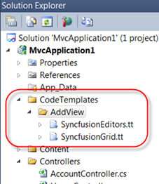
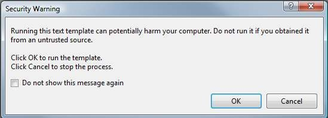
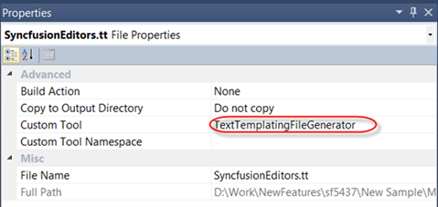
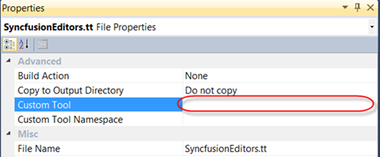

To place T4 templates on a per-project basis, follow the steps below.
1. Create a folder named CodeTemplates and then create a folder named AddView under this. Paste the custom Syncfusion T4 templates to this folder and include the files into the root of your project which helps to create the templates in the above location. Then customize the templates on a per-project basis. The following image illustrates this.

Figure 19: Including CodeTemplates
 Note: When you copy the above folder (any time you
add a T4 template(.tt) file) to a project, you will see warnings as
follows:
Note: When you copy the above folder (any time you
add a T4 template(.tt) file) to a project, you will see warnings as
follows:

Figure 20: Template Execution Warning
2. Click Cancel so that you don’t run the T4 template (if you are adding multiple .tt files, you have to click Cancel every time you get the Template Execution Warning window.).
3. As soon as the project sees a .tt file, a property on the file called Custom Tool will get set to TextTemplatingFileGenerator. This tells Visual Studio to use the default T4 host to execute the template and create a new file (nested underneath the template) based on the template. The following image illustrates this.

Figure 21: Custom Tool Property
4. Empty the text for the Custom Tool property and build the project as shown in the following image.

Figure 22: Setting Empty Text in Custom Tool Property